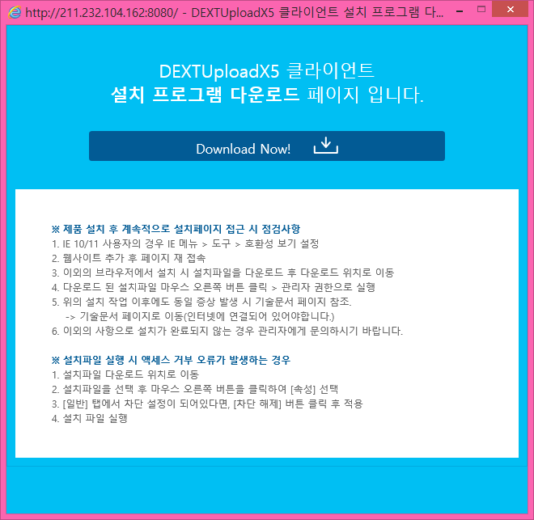

IE 모듈로 업로드하기
DEXTUploadX5는 HTTP 프로토콜 기반에서 RFC1867 규약을 따라 multipart/form-data를 서버로 전송하는 클라이언트 컴포넌트입니다.
IE 모듈은 ActvieX를 지원하는 Internet Explorer 전용 컴포넌트입니다.
멀티 모듈과 달리 다중 파일 다운로드와 데스크톱 응용 프로그램을 사용하여 파일을 여는 기능이 지원되며, 섬네일 자동 생성, 암호화 업로드, 폴더 업로드, 클립보드 업로드와 같은 특수 기능이 지원됩니다.
일반적으로 브라우저에서 파일을 전송하려면 input 요소의 type 속성을 'file'로 설정합니다.
그리고 POST 형식으로 전송을 해야 하기 때문에 form 요소의 enctype 속성을 multipart/form-data로 변경해야 합니다.
<form action="..." method="post" enctype="multipart/form-data"> ... <input type="file" name="file1"/> ... <input type="submit" value="Submit"/> </form>
사용자가 파일을 선택한 후, "Submit" 버튼을 클릭하면, 브라우저가 서버로 파일 데이터를 "multipart/form-data" 형식으로 인코딩하여 전송합니다.
순수 HTML만을 사용하여 업로드를 하려면, 업로드할 파일의 개수만큼 input 요소를 만들어줘야 합니다. HTML5에서는 하나의 요소에 여러 파일을 선택할 수도 있고, MIME 설정을 사용하여 필터링도 가능합니다. 그러나 여전히 불편한 UX가 있으며, 모든 브라우저에서 동일하게 지원하지 않는 문제도 존재합니다.
지금부터 DEXTUploadX5 IE 모듈을 사용하기 위한 주요 사항들을 알아보도록 하겠습니다.
- 자바스크립트 파일 선언하기
-
DEXTUploadX5 컴포넌트를 사용하려면 반드시 dextuploadx5-configuration.js 파일과 dextuploadx5.js 파일을 페이지에 포함해야 합니다.
<script src="제품위치/dextuploadx5-configuration.js"></script> <script src="제품위치/dextuploadx5.js"></script>
- dextuploadx5-configuration.js 파일 알아보기
-
dextuploadx5Configuration은 컴포넌트 설정을 담은 자바스크립트 객체입니다.
DEXTUploadX5를 사용하려면 반드시 dextuploadx5-configuration.js 파일을 선언된 객체의 속성 값을 모두 설정해줘야 합니다.
authkey 속성은 발급받은 평가판 인증키 혹은 정식 라이선스의 인증키를 설정하도록 합니다. (자세한 내용은 라이선스를 참고하면 됩니다.)
productPath 속성은 제품이 위치한 웹 경로를 설정합니다. 만일 경로가 올바르지 않다면 컴포넌트가 올바르게 시작되지 않습니다.
ieDownloadURL 속성은 클라이언트(DEXTUploadX5 IE 모듈) 설치 프로그램을 다운로드 받을 수 있는 웹 페이지 경로를 나타냅니다.
만약 제품(클라이언트)이 설치가 되지 않았을 경우, ieDownloadURL에 설정된 주소로 팝업이 열립니다. (멀티 모듈에서는 사용되지 않습니다.)

dextuploadx5-configuration.js 스크립트 파일은 DEXTUploadX5가 사용되는 모든 페이지에 포함되어야 합니다.
더불어 dextuploadx5.js 파일보다 먼저 선언되어야 합니다.
// dextuploadx5-configuraiton.js 파일 내용입니다. win.dextuploadx5Configuration = { // 파일을 업로드하기 위해서는 반드시 인증키 문자열이 있어야 합니다. authkey: "jn+xziPdVh6f5KN17uFHdY95XEvB7o...생략...2YjGiLl92zWiXAyO2FdI9r5XGfwxQ=", // 사용하고자 하는 제품의 명시 버전입니다. // 1) multi 제품의 경우 // 설치형 제품이 아니므로, 리소스를 그대로 사용합니다. // 2) ie 제품의 경우 // 설치 버전 확인 불가: 명시된 버전을 다운로드할 수 있는 다운로드 페이지(ieDownloadURL을 참고)로 이동합니다. // 설치 버전 >= 명시 버전: 설치된 제품을 그대로 사용합니다. // 설치 버전 < 명시 버전: 명시된 버전을 다운로드할 수 있는 다운로드 페이지로 이동합니다. // ... version: "1.0.0.0", // 패스란 제품 리소스의 위치를 말합니다. // 반드시 스키마(http, https)를 포함한 전체 path를 설정해주셔야 합니다.(절대로 상대 경로를 입력하지 마세요.) // 전제 경로 예제: "http://www.sample.com/dx5/", // 동일 도메인이라면: location.origin + "/dx5/" productPath: location.origin + "/dx5/", // IE 모듈을 사용하는 경우, 제품이 설치되지 않았을 때, 제품을 다운로드할 수 있는 페이지로 이동시킵니다. // 다운로드 페이지 경로는 반드시 productPath 하위에 존재할 필요가 없으며, 주어진 환경에 따라 커스터마이징하여 사용하십시오. // 절대로 상대 경로를 입력하지 마세요. // 전제 경로 예제: "http://www.sample.com/dx5/dextuploadx5-ax-download.html", // 동일 도메인이라면: location.origin + "/dx5/dextuploadx5-ax-download.html", ieDownloadURL: location.origin + "/dx5/dextuploadx5-ax-download.html" ... }; - 컴포넌트 생성하기
-
브라우저가 dextuploadx5.js 스크립트 파일을 읽으면 DEXTUploadX5를 관리하는 dx5 객체가 자동으로 생성됩니다.
dx5는 컴포넌트를 생성하고, 관리하는 자바스크립트 객체로서, 해당 페이지에서 전역(scope)으로 사용할 수 있습니다.
컴포넌트를 생성하려면 컴포넌트를 담고 있는 컨테이너 요소가 필요하고, 페이지의 마지막에 dx5.create 함수를 사용하여 컴포넌트를 생성할 수 있습니다. (또는 모든 DOM요소가 로드된 후에, dx5.create 함수를 호출해도 됩니다.)
컴포넌트의 크기는 컴포넌트를 담는 컨테이너의 크기를 기준으로 합니다. 그러므로 반드시 컨테이너의 크기를 지정해주시길 바랍니다.
<div id="dext5-container" style="width:500px; height:300px;"><!-- 컴포넌트를 담는 컨테이너 요소 --></div> <script> // 멀티 모듈은 mode를 "multi"로 설정하며, id 속성으로 컴포넌트 DOM 아이디를 부여합니다. // parentId는 컨테이너 아이디를 지정합니다. dx5.create({ mode: "ie", id: "dext5", parentId: "dext5-container" }); </script>만일 "DEXTUploadX5 IE version loading failed!"" 메시지 창이 뜨는 경우에는 dextuploadx5-configuration.js에서 productPath 설정에 문제가 있는 것이므로 경로가 올바른지 확인해야 합니다.
- 이벤트 연결하기
-
제품은 내부적으로 특정 활동이 시작하기 전/후에 이벤트가 발생합니다.
컴포넌트가 로드(load)되었다면 onDX5Created 콜백 함수를 호출하며, 만일 사용 중에 오류가 발생하면 onDX5Error 함수를 호출하도록 설정되어 있습니다.
이벤트를 연결해야만 제품을 사용할 수 있는 것은 아니지만, 복잡하고 다양한 기능을 구현하려면, 이벤트를 적절히 사용해야 합니다.
이벤트는 DOM 이벤트처럼 등록을 하는 것이 아니라, 단지 명명된 이름을 가진 콜백 함수를 생성하는 것만으로 이벤트가 동작합니다.
// onDX5Error라는 이름의 함수를 다음과 같이 만들면, // 컴포넌트에서 오류가 발생할 때, onDX5Error 함수를 호출합니다. function onDX5Error(id, code, msg) { ... } // onDX5Created 함수를 다음과 같이 만들면, 컴포넌트가 로드(생성) 된 후 호출됩니다. function onDX5Created(id) { ... }onDX5Error 콜백 함수가 선언되지 않으면, 발생한 오류를 알아낼 수 없습니다.
- 버튼 연결하기
-
DEXTUploadX5는 컴포넌트 화면 내에 파일 추가 및 업로드를 수행하는 버튼을 내장하고 있지 않습니다.
몇 가지 일부 기능을 제외하고, 주요 버튼은 모두 외부 HTML 요소를 사용하면 됩니다.
파일 업로드를 하려면 파일을 추가할 수 있는 버튼과 업로드를 시작할 수 있는 버튼이 필요하며, 두 버튼을 스크립트를 사용하여 컴포넌트 기능을 연결해줘야 합니다.
<button type="button" onclick="addTo('컴포넌트아이디');">추가</button> <button type="button" onclick="uploadFrom('컴포넌트아이디');">업로드</button> <script> function addTo(id) { dx5.get(id).openFileDialog(); } function uploadFrom(id) { var dx = dx5.get(id); if (dx.hasUploadableItems()) { // 추가된 모든 로컬 파일을 주어진 경로(웹)로 업로드합니다. dx.setUploadURL("http://..."); dx.upload("AUTO"); } else { alert("업로드할 대상이 없습니다."); } } </script>일부 기능에 대해서는 위와 같이 복잡한 스크립트를 사용하지 않고서 컴포넌트 로드 시점에 자동 바인딩이 되는 기능을 제공하고 있습니다.
<button id="btn-add-files" type="button" ">추가</button> <button id="btn-upload" type="button">업로드</button> <script> dx5.create({ ..., // 컴포넌트가 생성될 때, 파일 추가 기능과 파일 업로드 기능이 자동으로 연결하도록 합니다. btnFile: "btn-add-files", btnUploadAuto: "btn-upload" }); </script>자동 바인딩 기능은 매우 편리하나, 복잡한 기능을 구현하기에는 적합치 않을 수 있습니다.
- 서버측 처리
-
파일을 업로드하려면 순수 HTML을 사용하거나, DEXTUploadX5와 같은 클라이언트 컴포넌트가 필요합니다.
서버는 클라이언트에서 보내어진 파일 데이터를 서버의 특정 위치에 저장하기 하기 위한 추가 구현이 필요합니다.
파일 업로드를 처리하기 위한 기술 혹은 기능을 가지고 있는 서버 플랫폼도 있지만, 그렇지 못한 환경도 있습니다.
ASP.NET, PHP, Java Spring Web Framework와 같은 플랫폼은 기본적으로 업로드된 파일을 처리할 수 있지만,
ASP, Java Servlet 또는 JSP 같은 기술들은 파일을 처리할 수 없기 때문에, 파일 업로드를 처리를 위한 라이브러리를 필요로합니다.
자사의 서버 컴포넌트
- ASP: DEXTUpload Professional
- ASP.NET: DEXTUpload.NET Professional
- Java Servlet(JSP)/Spring: DEXTUploadNJ
- PHP: 미지원
DEXTUploadX5 멀티 모듈은 클라이언트 제품이므로 서버와의 약속을 필요로하는 몇 가지 기능을 제외하고서 서버 플랫폼(종류 및 필수 요소에 대해서)과는 종속적인 관계를 갖지 않습니다.
이와달리 서버 측 코드는 사용하는 언어, 플랫폼, 사용 중인 컴포넌트에 따라 달라지기 때문에, 지원 컴포넌트의 매뉴얼이나 샘플을 참고하시길 바랍니다.
일반적으로 대부분의 기능은 서버 환경에 영향을 받지 않으나, 대용량 업로드, 파일 다운로드, 열기와 같은 기능은 자사 서버 컴포넌트와 연동이 필요합니다.
- 서버로부터 받은 응답 데이터 처리
-
웹은 GET, POST로 보내어진 요청에 대해 항상 응답을 클라이언트로 돌려줍니다.
파일의 업로드를 서버에서 처리하면, 그 결과를 응답 데이터로 돌려 받습니다. 이 응답 데이터는 컴포넌트의 getResponses 함수를 가지고 얻을 수 있습니다.
// onDX5UploadCompleted 함수는 업로드가 완료(서버 측 파일 업로드 처리가 완료)되면 호출되는 콜백 함수입니다. function onDX5UploadCompleted(id) { // 응답 데이터를 확인합니다. alert(dx5.get(id).getResponses(0)); }
"파일 추가 > 파일 업로드 > 서버 측 처리 > 응답 데이터 반환" 과정을 마치면 파일 업로드 작업을 끝이나며, 순수 HTML 업로드와 달리 화면 전환(페이지 변경)이 발생하지 않습니다.